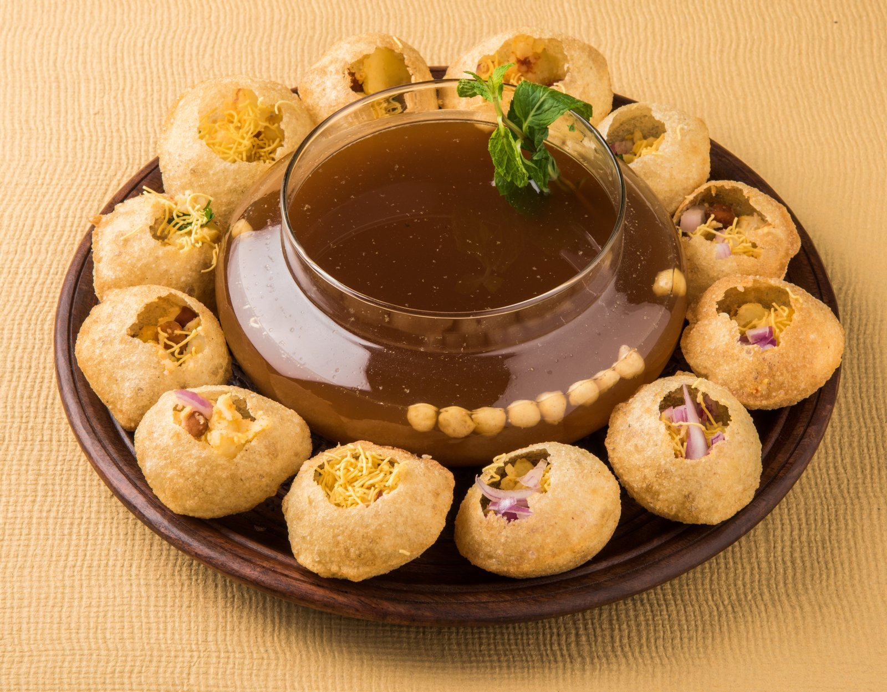
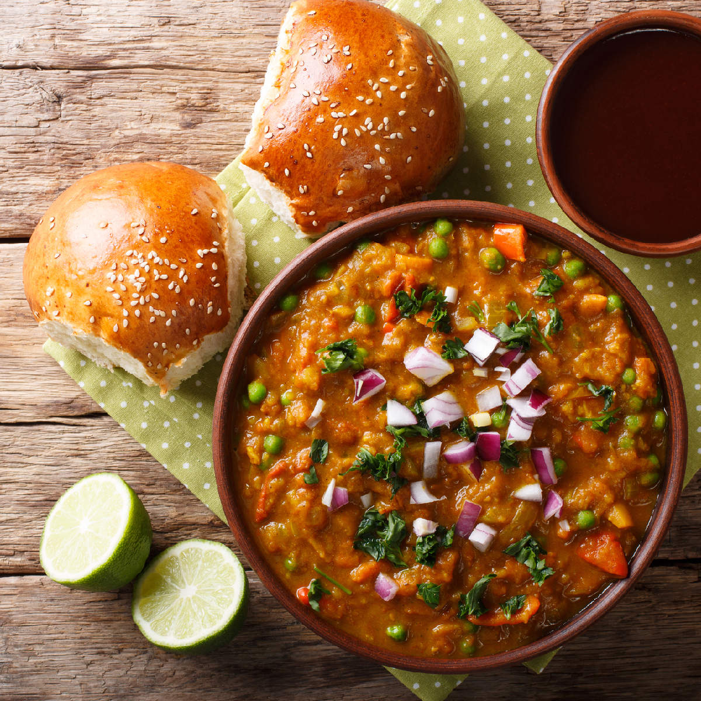

These are some of my favourite street foods.
Pani Poori One of India's favorite snack. The word "Pani" means water and "Puri" is puffed Indian bread. It is surely an experience eating Pani Puri. This popular Indian snack is also called Gol Gappa. Usually enjoyed at many of the street vendors in India.
In North India, panipuri is known as golgappa, gol referring to the crispy shell, and gappa referring to the eating process, since these small snacks are typically eaten one at a time. It is believed that panipuri originated in Uttar Pradesh and gradually spread in popularity throughout the country and outside of it.Today, panipuri stalls are a staple at most fairs, festivals, or weddings in India.
Pav bhaji is my all time favourite fast food. I can eat Pav bhaji at any time of the day. Usually, it is served as a snack. Pav Bhaji is a popular fast food which you can easily get in any hotel or in every corner of the street.
Pav bhaji is prepared with mashed vegetables like potatoes, capsicum, greenpeas, tomatoes, onions and mixed spices. This bhaji is served with cut onions, lots of butter and pav which is smeared with butter. The recipe of pav bhaji is thought to be originated in Mumbai. It is loved by people all over our country as well as abroad.
